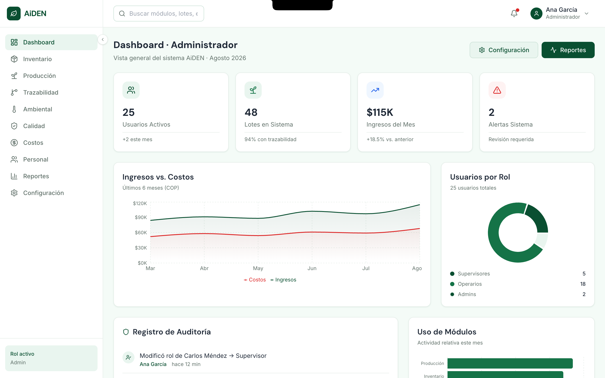
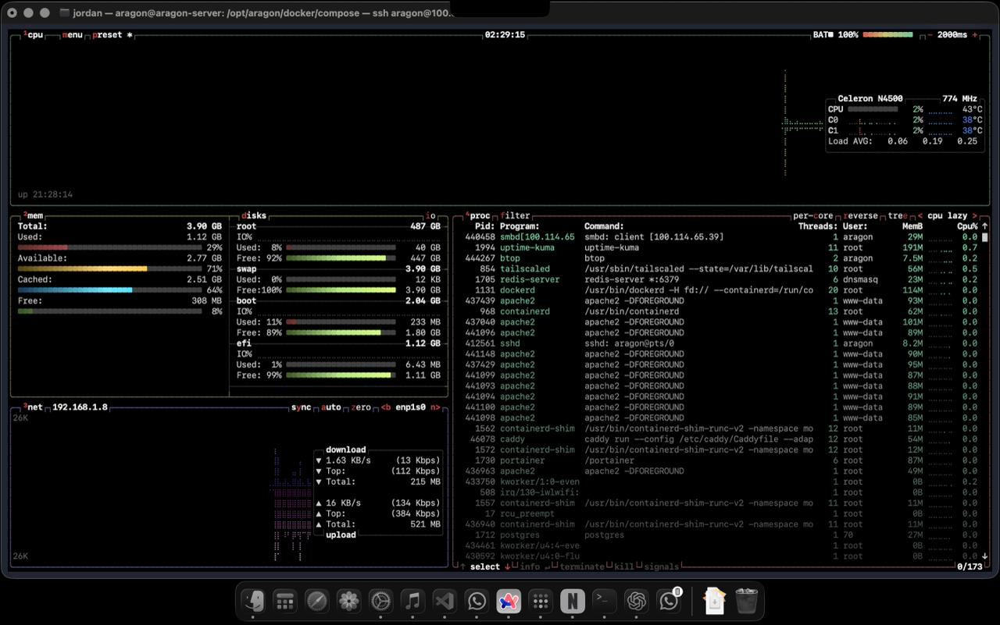
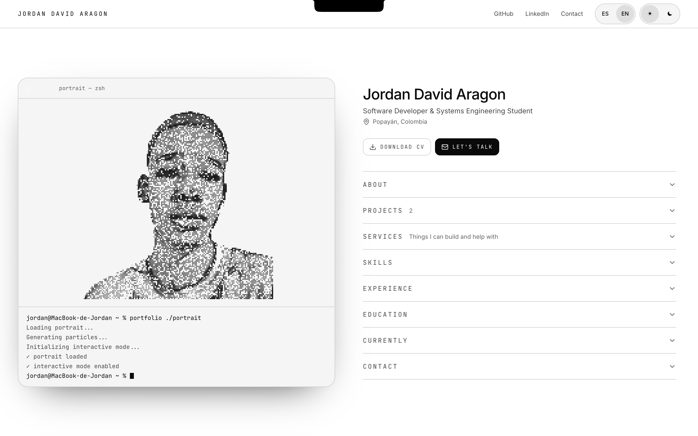

01
Desarrollo web
Sitios, landing pages y experiencias digitales que representan bien una marca y funcionan en cualquier pantalla.
DIGITAL STUDIO / POPAYÁN, COLOMBIA
Disponible para proyectos
Construyo sitios web, software y soluciones digitales pensadas para resolver problemas reales.
Explorar proyectos ↓01 — 04
01 / ENFOQUE
Una idea no necesita más ruido. Necesita una solución que tenga sentido, funcione y pueda crecer contigo.
02 / SERVICIOS
01
Sitios, landing pages y experiencias digitales que representan bien una marca y funcionan en cualquier pantalla.
02
Herramientas construidas alrededor de una necesidad concreta, desde la idea hasta una versión utilizable.
03
Rediseño, responsive, organización y optimización para proyectos que ya existen y necesitan evolucionar.
04
Cuando el problema no cabe en una categoría bonita, diseñamos una solución práctica para resolverlo.
03 / PROYECTOS

01 / 03 · SOFTWARE
Plataforma digital para la gestión de un vivero, desarrollada como proyecto formativo.
Web · Gestión · 2026
02 / 03 · INFRAESTRUCTURA
Servidor personal para alojar servicios y herramientas digitales propias.
Self-hosted · Infraestructura · 2026
03 / 03 · IDENTIDAD DIGITAL
Un espacio para presentar proyectos, experiencia y el trabajo que estoy construyendo.
Portfolio · Web · 202604 / ARAGON
Aragon nace de una idea sencilla: construir tecnología útil sin convertir cada proyecto en una montaña de procesos.
Detrás de la marca estoy yo, Jordan Aragon, desarrollador y estudiante de Ingeniería de Sistemas. Aragon reúne mis proyectos, servicios y la experiencia que voy construyendo.
Conocer mi trabajo ↗05 / PRESENCIA DIGITAL
06 / CONTACTO
Cuéntame la idea, el problema o simplemente lo que quieres mejorar.